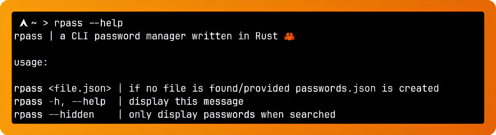
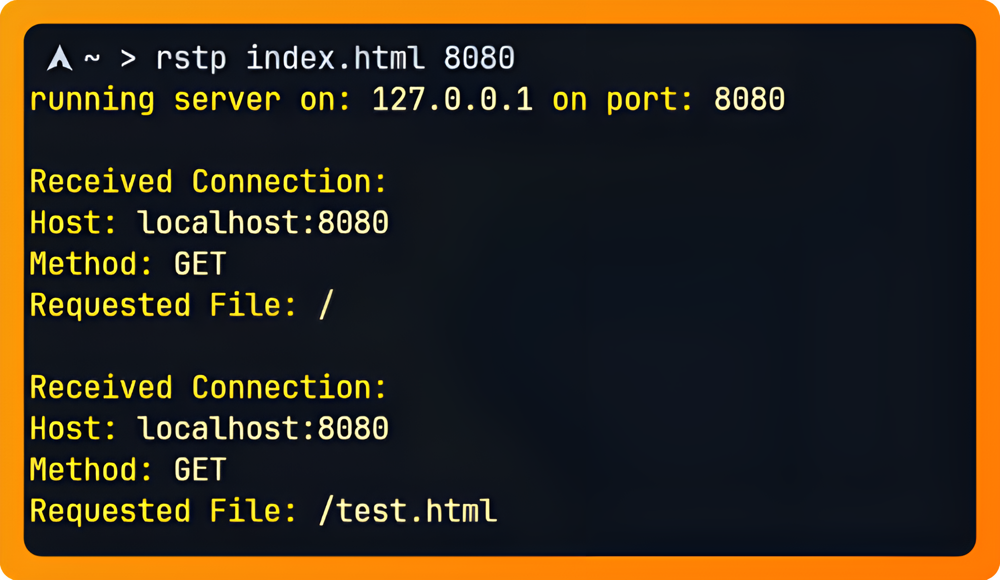

rpass
A CLI password manager
Using: Rust 🦀
rpass is a CLI password manager, it uses json files to store passwords and displays them in a table. It features auto-indexing and searching. Now features encryption.
passgo
A CLI password generator
Using: 🇬 🇴
passgo is a CLI password generator. It uses lowercase, uppercase, numbers and special characters to generate passwords, allowing the user to specify a length.
rstp
A simple web server
Using: Rust 🦀
rstp is a simple web server. It only supports text based files for now. 😅
ami-rs
whoami's cousins

Using: Rust 🦀
A collection of fun CLIs inspired by whoami: whereamie, whenami, whyami, whatami.
crawl
A fun CLI web crawler

Using: Rust 🦀
A CLI web crawler that follows elements throughout the web.


markov
A CLI markov chain text generator in Rust 🦀

Using: Rust 🦀
Generates statistically generated text using a 2 state markov chain based on input.
Dijkstra
An implementation of Dijkstra's Algorithm in Rust

Using: Rust 🦀
An implementation of Dijkstra's Algorithm in Rust, allows the user to specify amount of nodes, start node and end node, giving the path and distance
boxybird
A minimal Flappy Bird clone written in Lua 🌙 using Love2D 💗

Using: Lua 🌙
A minimal Flappy Bird clone written in Lua using the Love2D framework
darwin
A CLI string-evolving genetic algorith

Using: Rust 🦀
A CLI string-evolving genetic algorithm using 20 parents per generation
picrypt
A CLI tool to convert text into encrypted image and vice versa

Using: Rust 🦀
A CLI tool to convert text into encrypted image and vice versa, using custom cypher. Converts text to ppm then to png and vice versa.